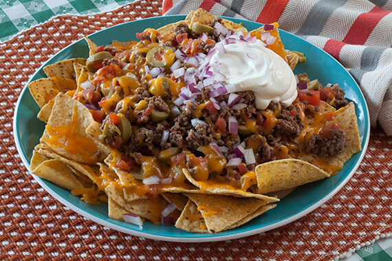

Shepherd's Pie is a classic British comfort food, traditionally made with minced lamb, though beef can be used in variations known as "Cottage Pie." This hearty dish layers a savory meat filling with vegetables like carrots, peas, and onions, all cooked in a rich, flavorful gravy. The filling is then topped with a generous layer of creamy mashed potatoes, which are often browned under the grill for a crispy, golden finish. Originally a dish to make use of leftover meat, Shepherd's Pie has evolved into a beloved staple of British cuisine. The combination of tender, seasoned lamb and buttery mashed potatoes makes it a satisfying and warming meal, especially popular during colder months. It's typically served on its own or accompanied by seasonal vegetables and a side of gravy for extra indulgence.

Breakfast pancakes are a classic morning treat that is both delicious and comforting. Made from a simple batter of flour, sugar, eggs, and milk, these fluffy and golden-brown pancakes are a staple of breakfast tables everywhere. They're the perfect way to start your day, whether you're looking for a quick and easy meal or a special treat. Whether you top them with fresh fruit, syrup, whipped cream, or a pat of butter, breakfast pancakes are a versatile and tasty breakfast option that's sure to please. They're also a great way to get your day started off right, providing a boost of energy and a sense of comfort and satisfaction that will keep you going until lunchtime.
Mexican chilli nachos are a flavourful and spicy twist on the classic nacho dish. A mountain of crispy tortilla chips is smothered in a rich and hearty Mexican chilli made with tender beef, onions, garlic, and a blend of warming spices. The chilli is slow-cooked to perfection, infusing the nachos with a deep and satisfying flavour that's sure to leave you wanting more. Topped with a generous helping of melted cheese, sour cream, and fresh cilantro, Mexican chilli nachos are the perfect snack for anyone who loves the bold and vibrant flavours of Mexican cuisine. Whether you're watching the game, hosting a party, or just need a satisfying meal, these nachos are sure to hit the spot.
